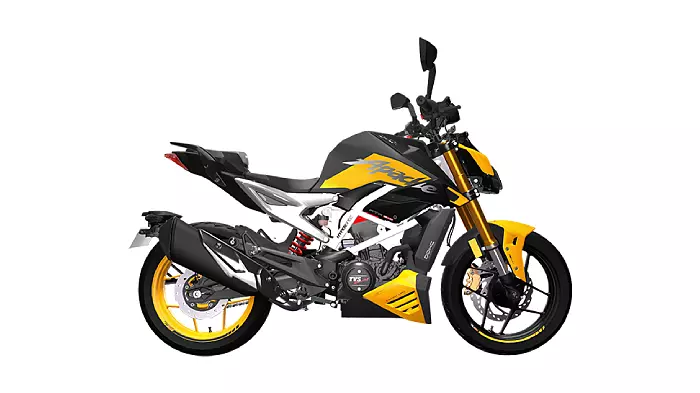

TVS Apache RTR 310
₹ 2,44,000
TVS Company is introducing a new Bike in 2023 which is TVS-Apache-RTR-310. You can select the color of your bike which you want. The TVS Apache RTR 310 is the most expensive and premium streetbike the company has ever launched. It gets striking design elements which makes it quite aspirational. The 310cc engine is borrowed from the RR310, and that is why it gets good low and mid-range. In terms of equipment, the bike is loaded with some modern features. its main rival has better performance numbers and is also cheaper to maintain. The Mileage of TVS RTR 310 is 30kmpl. There are only Two Colors of TVS Apache RTR 310 are 1st is Arsenal Black and 2nd is Fury Yellow.
Perchase Now More